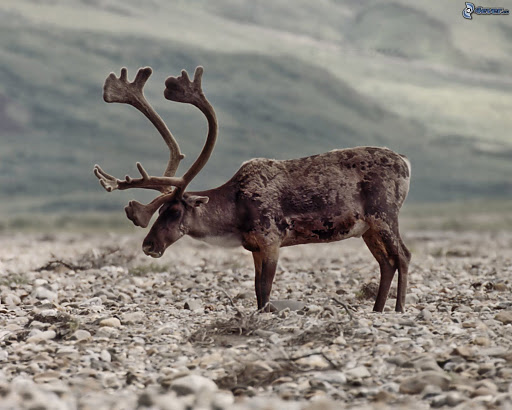

La fauna è caratterizzata a nord da animali come la renna, la lepre polare, la volpe e in particolare il lemming, mentre a sud vi sono cervi, alci, lupi e orsi. Buoi muschiati sono stati reintrodotti nel 1947, provenienti dalla Groenlandia. I laghi e i fiumi sono ricchi di lucci, salmoni e trote. Nelle coste invece sono presenti animali molto importanti per l'economia norvegese: il merluzzo e l'aringa.
